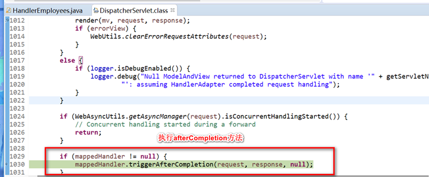

首先看一下DispatcherServlet结构：
观察HandlerExecutionChain对象的创建与赋值，这个方法用来表示执行这个方法的整条链。
进入getHandler方法：
此时的变量handlerMappings为：
刚好对应我们的三个方法，说明了我们的方法映射全部存放在handlerMappings中，通过遍历handlerMapping来进行操作。
通过HandlerMapping来对HandlerExecutionChain赋值。
执行完这一句参数有，说明获取了一条完整的链，可以来进行执行了，注意此时获取到的是所有拦截器，因为必须要走过所有拦截器。
通过HandlerExecutionChain对象来获取HandlerAdapter对象，通过这个对象进行控制器方法的调用，并返回ModelAndView对象，再通过ModelAndView对象调用解析器创建视图对象，再通过视图对象的渲染方法来进行最终的用户的需求结果处理。
完成这一步后使用ha调用拦截器的preHandle方法，如果放行，则执行handle方法，不放行，则返回：
进入此方法中：
下一步就是执行handler处理方法，执行完方法返回一个ModelAndView对象，使用此对象调用视图解析器创建视图对象，再根据视图对象调用其渲染方法将模型中的数据以特定的格式传输给用户。
继续执行：
执行到这里以及执行完核心业务了，需要执行postHandler方法，注意这个注释，无论是不是有异常，最终都是到这个方法中，并且有相应的异常的话还是会返回一个ModalAndView对象，让错误的结果还是能正常返回，并给出相对友好的提示信息。
/**
有异常的处理：
执行渲染方法：
进入方法，根据视图解析器获取视图，获得视图对象就返回：
解析完成，调用view的 render方法（注意不是DispatcherServlet的render方法）：
view的render方法：
执行完渲染，跳转时执行拦截器的afterCompletion方法。

进入方法：
弄完这些，还要通过过滤器链等等，最终才完成一整个springmvc的执行流程。
按照我自己的理解，画出了这么一幅流程图，希望对大家有帮助：
我是福尔斯甘，如果对本篇有疑问，或者发现有什么错误之处，欢迎提出指出，觉得评论不方便的话，本人邮箱是96532354@qq.com，qq同号，欢迎共同学习讨论问题。
觉得不错的话可以点个推荐分享一下哦，谢谢大家的支持~~